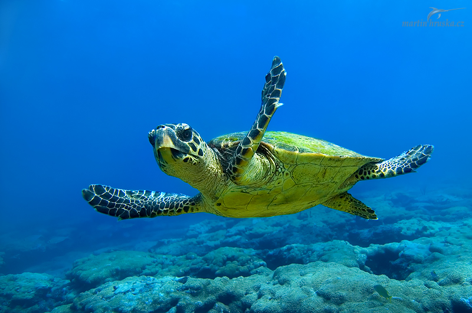

Kadıköy’deki Adalar iskelesi önünde buluşan bir grup bisikletçi, atlı faytonların kaldırılması için adalet konvoyu oluşturdu. 30’dan fazla bisikletçinin oluşturduğu konvoy, Kadıköy’den Bostancı’daki Adalar İskelesi önüne kadar pedal çevirdi.
Hayvanlara binlerce yıllık adalet borçluyuz.
Eylemde, “Faytondan in bisiklete bin”, “Faytonlar kaldırılsın, beygirlere özgürlük”, “İsyan, beygir, özgürlük” yazılı dövizler de yer aldı.

Yuvalama dönemi başlayan caretta carettalar, Antalya kumsallarına yumurta bırakmaya başladı. Caretta carettalar özellikle kent merkezindeki Lara ve Konyaaltı sahiline çıkarak yumurta bıraktıktan sonra yeniden denize dönüyor. Lara- Kundu sahiline gelen caretta carrettaların bazı yerli ve yabancı turistleri ısırdığı iddia edildi. 10 tatilcinin ısırık şikayetiyle hastanelere başvurduğu kaydedildi.
“Kaplumbağalar üreme dönemine girdi. Kıyıda popülasyon yoğunlaştı. Su ısısı artınca, hayvanın beslenme fizyolojisi de arttı. Caretta carettaların beslenme prosedürünün içinde denizanaları var. Öğleden sonra güneş ışınları eğik gelmeye başladığı zaman, karşıda insan vücudu özellikle beyaz tenliler ısırılıyor. Parlama sonucu canlı beyaz tenli kişinin hareket eden bölgesini denizanası zannediyor ve ısırıyor. Derin ve kayalık bölgede bu durum yaşanmaz. Alanya, Gazipaşa’da bu durumları göremezsiniz. Eylül ayına kadar carettaların sahillerimizde görünmesi devam eder.”
“Bu ısırma vakaları genelde 15.00- 16.00 saatleri arasında gerçekleşiyor. Korkulacak bir durum yok. Vakalara baktığım zaman ısırma değil ezme şekli var. Küçük bir kızarıklık yapıyor. Caretta ile yüzmeniz o bölgenin ne kadar temiz olduğunu ve doğal yaşamın devam ettiğinin en büyük göstergesidir. İnsanlarımız gönül rahatlığıyla denize girmeye devam edebilir. Kimseyi daha kaplumbağa yemedi ya da etini koparmadı. Kaplumbağa zaten çırpındığınız an hemen kaçar.”
1– Sirklerdeki hayvanlar, doğal yaşam alanlarından koparılarak hapsediliyor, insanların eğlendirilmesi için akıl almaz işkencelerle, açlıkla terbiye edilerek zorla sahneye çıkarılıyor.
2– İstenildiği gibi eğitilmeleri için aç bırakılıyorlar; bir parça fıstık ya da meyve sayesinde, öğrendikleri hareketleri, seyirci önünde zorluk çıkarmadan, daha kolay yapmaları için. Verilen komutu uygulamamak için direnen ya da hareketleri yapmayı reddeden hayvanlar ise ekstradan dayak ve işkenceyle, açlıkla ve susuzlukla cezalandırılıyor ki yabanıl dirençleri kırılsın diye…
3– Eğitimlerde çivili sopa, kırbaç, elektroşok çubuğu, kanca gibi işkence aletleri kullanılarak hayvanlara “yabanıl” oldukları unutturulmaya çalışılıyor, bu iğrenç sürece ve süresiz tutsaklığa adapte olmaları için son derece acımasız muamelelere maruz bırakılıyorlar.
4– Hayvanlar, acıyı insanlarla eşit düzeyde hisseder, psikolojik baskıyı ise katbekat fazla hissederler.
5– Sirkler hayvanlar için eğlence değil, işkencedir.
Nesli dünya ölçeğinde tehlikede olan, birçok ülkede avı yasaklanan ve koruma çalışmaları başlatılan üveyik ve elmabaş patkanın avı ülkemizde hala yasal.
http://www.dogadernegi.org/amanavci/ adresinde bulacağınız dilekçe örneğini ileterek avlanmalarının yasaklanmasını sağlayabilirsiniz.
1. Her yıl yüzlerce kozmetik şirketi, ürünlerini milyonlarca hayvan üzerinde dener.
2. Kozmetik sektöründeki hayvan testlerinin büyük çoğunluğu ürünün cildi ve göz dokusunu tahriş edip etmeyeceğini anlamak için yapılır.
3. Yaygın olarak uygulanan bir başka testte denek hayvanının belirli bir maddenin ne kadarına maruz kaldıktan sonra öldüğü ölçülür.
4. Kozmetik ürünlerin hamile kadın ve bebeklerde etkisinin ölçülebilmesi için hamile tavşanlar özellikle öldürülür.
5. Hayvan testi yapan markaların ürünlerini almayarak, bu ürünleri kullanan arkadaşlarınızı bilgilendirerek bu vahşetin sonlanmasına katkıda bulunabilirsiniz.
Kanun tasarısına göre, nüfusu 100 binden az olan 970 ilçe belediyesinde kısırlaştırma ve rehabilitasyon merkezi kurulmayabilecek. Böylece, sokakta yaşayan hayvanların ormanlara, yerleşim yeri dışına ve çevre ilçelere bırakılması engellenemez hale gelecek. Hastalık, açlık ve susuzluk bu tecritin en vahim sonucu olarak görülüyor.